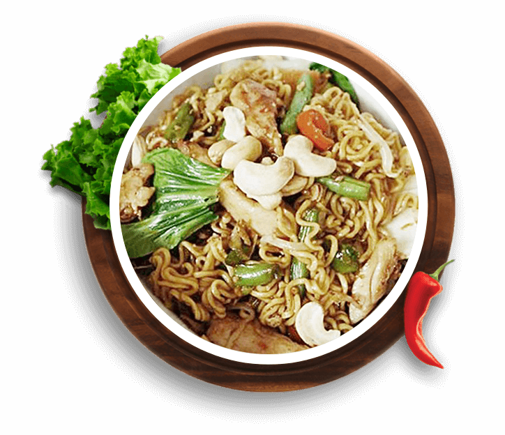
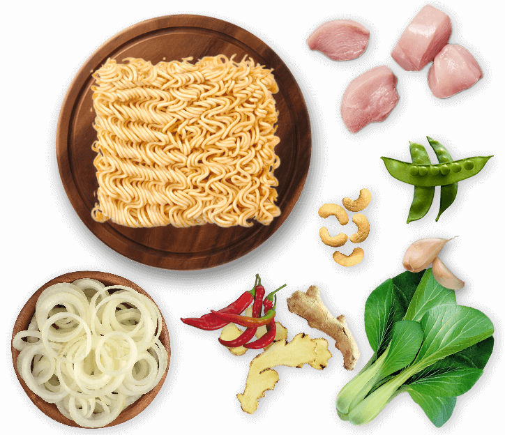

Noodles!
Indomie Chicken & Veggie Stir Fry

Ingredients:
- 1 Pack of Indomie Mi Goreng Barbeque Chicken
- Boneless chicken thighs - thinly sliced
- Bok Choy
- Green beans - sliced
- Spring onions - sliced diagonally
- Onion - diced
- 1/4 small red chilli - finely sliced
- Crushed ginger
- Crushed garlic
- Hoisin sauce
- Sweet chilli sauce
- Soy sauce
- Cashew nuts

Preparation time: 30 minutes
Cooking Instructions:
- Cook Indomie Noodles according to packet directions.
-
Stir fry the bok choy, onion, spring onions and green beans together
until almost tender, remove from pan.
-
Place chicken into frying pan with garlic, chilli, ginger, hoisin sauce,
soy sauce and sweet chilli sauce. Stir fry until chicken is cooked
almost through.
-
Add noodles, and other retained vegetables. Combine all ingredients in
frying pan and stirfry until chicken is cooked through.
- Add cashew nuts and serve.
Back to Main Page